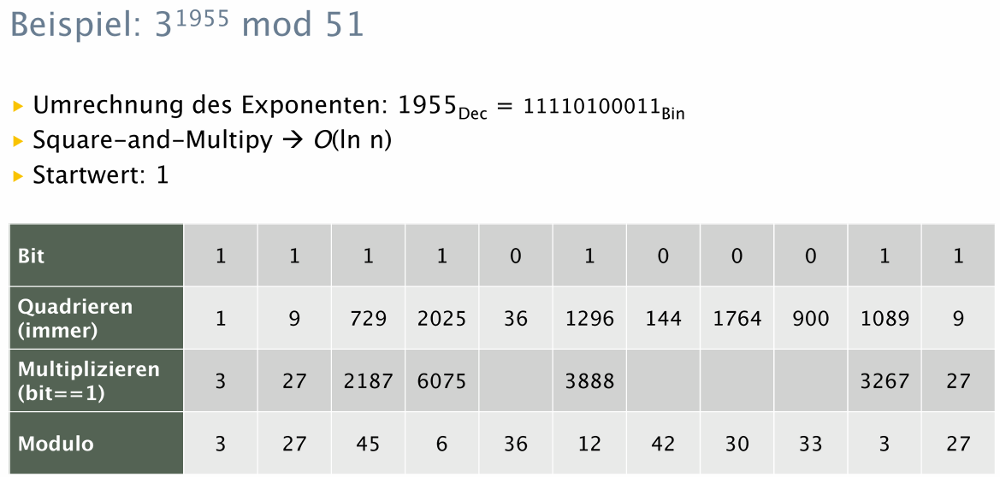

p = 11
q = 13
n = p*q
n[1] 143Christian Franke
January 3, 2025
Im Modul Informationssicherheit lernten wir unter anderem den RSA Schlüsselaustausch kennen. Dieses asymetrische kryptographische Verfahren ist eine wichtige Basis für den verschlüsselten Datenaustausch in der vernetzen Welt. Für effiziente Berechnungen der Schlüssel wird die Moduloexponentiation genutzt. Beides wird hier kurz erläutert und der R-Code präsentiert für ein einfaches Beispiel.
Es gilt
\[(m^e)^d \bmod n = m\]
wobei der öffentliche Schlüssel \((e,n)\) enthält und der private Schlüssel \((d,n)\). D.h. die Exponenten sind Teile des privaten oder öffentlichen Schlüssls. \(n\) ist in beiden Schlüsseln enthalten und \(m\) ist die Nachricht.
Alice erzeugt nun das Schlüsselpaar. Für den Modulo nutzt sie das Produkt aus zwei zufällig ausgewählte grosse Primazahlen \(p\) und \(q\).
\[n = p*q\]
Danach wird die Eulersche Phi-Funktion \(\varphi\) ermittelt, die zur Ermittlung des privaten Schüssels benötigt wird. Dies ist somit ein wichtiger Zwischenschritt, aber Phi wird nicht weiter verwendet.
\[\varphi = (p-1)*(q-1)\]
Weiter wird eine teilerfremde Zahl \(e\) definiert (Exponent im öffentlichen Schlüssel), die zwischen 1 und \(\varphi\) liegt. Wie \(e\) exakt festgelegt wird, habe ich in R jedoch nicht weiter berechnet resp. verifiziert.
Als letztes muss noch die Zahl \(d\) (Exponent im privaten Schlüssel) ermittelt werden. Für \(d\) gilt
\[e*d \bmod \varphi = 1\]
fun_d <- function(x, y) {
d <- 1
while ((x*d) %% y != 1) {
d <- d + 1
}
return(d)
}
d <- fun_d(e, phi)
d[1] 47Somit haben wir die drei komponenten des öffentlichen und privaten Schlüssels festgelegt.
[1] "public key = (23,143)"[1] "private key = (47,143)"Es gibt nun zwei Use-Cases, um die Schlüssel zu nutzen. Für beide Use-Cases wird die Moduloexponentiation verwendet, d.h. mit grossen Zahlen gerechnet. Hierfür benötigen wir in R die Library “numbers”.
Die Nachricht \(m\) wird zunächst ASCII Codiert, d.h. es sind nur noch Zahlen vorhanden, mit denen wir die mathematischen Operationen durchführen können. Wir möchten beispielsweise den Buchstaben “S” verschlüsseln, was in ASCII der Zahl 83 entspricht.
Um die Nachricht zu verschlüsseln, nutzt Bob nun den öffentlichen Schlüssel.
\[c = m^e \bmod n\]
Alice verwendet nun den privaten Schlüssel, um die Nachricht wieder lesbar zu machen.
\[m' = c^d \bmod n \]
Es ist wichtig, dass Nachrichten auf dem Weg zum Kommunikationspartner nicht verändert werde. Beispielweise könnte Alice die Nachricht (z.B. Überweisung) an Bob (z.B. Bank) signieren und Bob kann die Echtheit der Nachticht verifizieren.
Alice signiert die Nachticht “42” mit Ihrem privaten Schlüssel.
\[s=m^d \bmod n\]
Bob nutzt den öffentlichen Schlüssel von Alice und wendet den öffentlichen Schlüssel auf die Signatur an. Wenn die Signatur und die Verifizierung identisch sind, ist die Nachticht unverändert.
\[v=s^e \bmod n \equiv m\]
Das ganze funktioniert in der Realität mit sehr grosen Zahlen. Die Moduloexponentiation kann beispielsweise mit dem “Square-and-multiply” Algorithmus schnell und einfach ausgeführt werden.
Der Square-and-multiply Algorithmus und verwandte Methoden (z.B. Sliding Window) ermöglichen eine schnelle und einfache Berechnung der Modulo einer Exponentiation. Dabei gilt
\[m^e \bmod n = (m \bmod n)^e \bmod n\]
Dies hat praktische Auswirkung, weil wir mit “kleinen” Zahlen rechnen können. Zudem wird der Exponent in Binärzahlen umcodiert und bei jeden Zwischenschritt quadiert und, falls der bit eine 1 ist, auch noch mit der Basis multipliziert. Somit reduziert sich die Laufzeit des Algortihmus.

Hier noch die Prüfung in R.